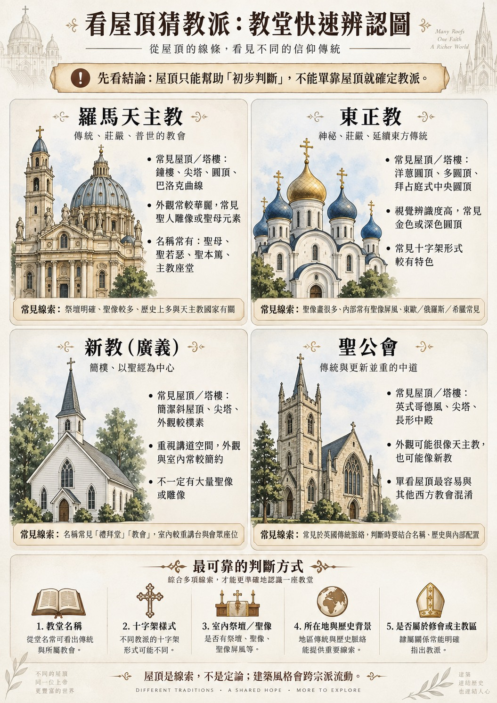
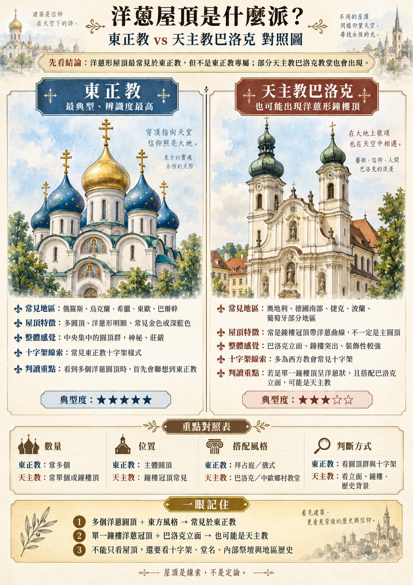

WHITE CATHEDRAL · 白教堂
Helsinki Cathedral
赫爾辛基主教座堂
由 Carl Ludvig Engel 設計並由 Ernst Lohrmann 延續完成。中央綠色圓頂、四角小圓頂、古典柱列與巨大階梯，形成赫爾辛基最具代表性的城市輪廓。
節點插件觀察：
「圓頂」節點在這裡被插進路德宗插槽，卻長成天主教／新古典式的巨大穹頂——證明圓頂不是東正教或天主教的專利，是可以跨教派移動的零件。
一支 30 分鐘的歐洲教堂科普影片，整理出一組教堂之間彼此互通的建築語彙：尖塔鐘樓、圓頂、彩窗、壁畫、立面浮雕、平面格局。這頁把六個語彙抽出來，分別放進天主教、東正教、新教／路德宗、聖公會的脈絡裡比對，最後再拿芬蘭赫爾辛基三座教堂做實地驗證。


影片開場就點題：「尖塔、穹頂、彩窗、鐘聲」。往下看完整支影片，會發現它其實還有壁畫／透視法、立面浮雕、平面格局與功能三個沒有明說、但貫穿全片的節點。這六個，就是接下來要「插件」到各教派身上的基本零件。
垂直地標，決定城市天際線，也負責報時、召喚會眾。哥德式尖塔最戲劇化，但新古典、路德宗、聖公會同樣大量使用。
影片節點連結：
結構工程與「天堂意象」的結合。文藝復興把圓頂推到極致，東正教把它變成洋蔥形的多圓頂群，現代路德宗甚至用一圈銅頂取代整個屋頂。
影片節點連結：
影片說「象徵與信仰構成的世界」——彩窗在識字率低的年代負責說故事、教教義（洗禮、聖經場景），新教改革後則傾向透明玻璃、去除圖像。
影片節點連結：
米開朗基羅的西斯汀禮拜堂穹頂畫，示範了線性透視如何被「嚴謹地運用在大型宗教繪畫中」。東正教則發展出聖像畫與聖像屏風系統；新教普遍拿掉具象壁畫。
影片節點連結：
羅馬式教堂在入口拱門上做敘事浮雕，是「羅馬式建築裝飾的典型代表」；哥德立面把它放大，現代路德宗（如磐石教堂）則反過來，直接用天然岩壁取代所有裝飾立面。
影片節點連結：
教堂不只是拜堂，也可能是王室墓葬地——「這是法國聖德尼大教堂中」的皇家陵墓群，說明平面格局常常跟著功能（加冕、安葬、講道）走，而不是單純的美學選擇。
影片節點連結：
第二支參考影片專門講「怎麼一眼辨識建築風格」，把六個節點放進更長的時間軸——從古希臘柱式到現代主義，等於是本頁節點框架的時代座標。
天主教、東正教、新教／路德宗、聖公會不是四個平行存在的宗派，而是同一棵樹上先後岔開的四條枝幹。看懂分岔的順序，才知道為什麼「圓頂」「彩窗」這些節點會先共用、後來才各自演化。
示意時間軸，橫軸比例經過調整以方便閱讀，非等比例尺。核心脈絡：早期教會 → 1054 年東西教會大分裂出東正教 → 西方天主教到 16 世紀再岔出新教／路德宗（1517）與聖公會（1534）。
同一個節點，換一個教派插槽，長出來的樣子完全不同。這張表把六個節點橫向攤開，直接比對天主教、東正教、新教／路德宗、聖公會的常見表現。
| 節點 | 天主教 | 東正教 | 新教／路德宗 | 聖公會 |
|---|---|---|---|---|
| 尖塔／鐘樓 | 哥德尖塔、巴洛克鐘樓冠頂 | 洋蔥頂鐘塔，常與主圓頂群並列 | 簡潔尖塔，或如磐石教堂完全取消塔樓 | 英式哥德方形塔樓為主 |
| 圓頂 | 文藝復興／巴洛克大圓頂（聖伯多祿大殿） | 多圓頂、拜占庭式中央圓頂，金色或深色 | 可有可無；現代設計常改用環形天窗 | 較少作為主視覺，偶見於仿古典設計 |
| 彩窗 | 玫瑰窗＋聖經敘事，色彩華麗 | 較少大面積彩窗，光線多來自圓頂鼓座 | 簡化或透明玻璃，強調自然光而非圖像 | 常保留哥德彩窗傳統 |
| 壁畫／穹頂畫 | 大量具象壁畫、天頂畫（西斯汀禮拜堂） | 聖像畫、聖像屏風，風格程式化 | 幾乎沒有具象壁畫，牆面留白 | 介於天主教與新教之間，視教堂而定 |
| 立面浮雕 | 羅馬式敘事浮雕、巴洛克雕像立面 | 立面裝飾集中在圓頂與馬賽克，浮雕較少 | 立面極簡，甚至以天然材質（岩壁）為立面 | 哥德式立面雕刻，但量體不及天主教 |
| 平面格局／功能 | 拉丁十字平面，常兼作王室加冕、墓葬地 | 集中式平面＋聖像屏風分隔至聖所 | 會眾廳式平面，講台與聖壇並重 | 拉丁十字平面，功能較接近天主教傳統 |
影片節點連結：


洋蔥頂在東正教與天主教巴洛克身上同時出現，不是因為兩者共用同一套象徵系統，而是曲線母題各自沿著完全不同的路線被重新發明了一次。
東正教路線：俄羅斯洋蔥頂的確切起源，學界其實沒有單一定論——一說源自俄羅斯本土的「帳篷式」木造教堂結構；一說是經貿易與蒙古金帳汗國系統（如喀山汗國，1552年被征服後催生了聖瓦西里主教座堂）吸收的東方造型；還有一說認為它承襲耶路撒冷聖墓教堂穹頂的圖像學傳統。可考最早的洋蔥頂圖像見於12世紀俄羅斯手抄本插畫，16世紀聖瓦西里主教座堂落成時已是成熟風格。至於「洋蔥頂象徵蠟燭火焰」，是後世（尤其是1917年哲學家特魯別茨科伊的論述）才明確提出的美學詮釋，並非教會從一開始就賦予的教義；「方便融雪」則多半被專家視為造型的附加好處，而非設計主因。
天主教巴洛克路線：球莖狀鼓頂的雛形，據學者 Wolfgang Born 考證最早見於敘利亞伍麥亞王朝的馬賽克圖案與伊朗塞爾柱建築，經摩爾人帶入西班牙；17世紀之後，中歐（德國南部、奧地利、波希米亞）的巴洛克建築師把這條曲線重新當成純裝飾語彙大量使用，再透過跨國工作的建築師（例如馬夫拉宮的設計者 João Frederico Ludovice，德國出身、曾於羅馬受訓）帶到葡萄牙等地。
兩條路線唯一可能重疊的地方，只在最遙遠的起點（中東的球莖造型母題）；中間各自在完全不同的宗教與政治脈絡裡重新被賦予意義——與其說是同一套象徵系統的兩種方言，不如說是同一個曲線，被兩群互不相識的人各自重新發明了一次。
參考資料：Wikipedia — Onion dome（含 Wolfgang Born 的考證、特魯別茨科伊 1917 年論述、聖瓦西里主教座堂年代等）、Wikipedia — João Frederico Ludovice（馬夫拉宮建築師生平）。
芬蘭位在西方拉丁基督教與東方正教傳統的交界，六個節點在同一座城市裡就能找到三種完全不同的插法——最好的驗證場地。
由 Carl Ludvig Engel 設計並由 Ernst Lohrmann 延續完成。中央綠色圓頂、四角小圓頂、古典柱列與巨大階梯，形成赫爾辛基最具代表性的城市輪廓。
節點插件觀察：
「圓頂」節點在這裡被插進路德宗插槽，卻長成天主教／新古典式的巨大穹頂——證明圓頂不是東正教或天主教的專利，是可以跨教派移動的零件。

紅磚外牆、金色圓頂與高度裝飾化的輪廓。教堂由俄羅斯建築師 Aleksei Gornostajev 設計，建於芬蘭仍是俄羅斯帝國自治大公國的年代。
節點插件觀察：
多個洋蔥圓頂＋馬賽克裝飾＋內部聖像屏風，三個節點同時指向東正教插槽，是本頁裡「節點特徵最集中」的一個案例。

由 Timo 與 Tuomo Suomalainen 兄弟設計，教堂直接鑿入天然岩盤；粗獷岩壁、銅製圓頂與環狀天窗取代傳統外牆與鐘塔。
節點插件觀察：
「立面浮雕」節點被直接拔掉，換成裸露岩壁；「圓頂」節點保留但材質換成銅環天窗。同屬路德宗，卻和白教堂用了完全不同的節點組合——教派相同，不代表節點組裝方式必須相同。
如果旅行時看到一座陌生教堂，建議照這個順序判斷節點與教派的關係，而不是從屋頂開始就下結論。
「洋蔥頂＝一定東正教」不成立；巴洛克西方教堂的鐘樓冠頂也可能出現類似曲線。
「哥德尖塔＝一定天主教」不成立；聖公會與路德宗也大量使用「尖塔」節點。
「外觀簡潔＝一定新教」也不成立；現代天主教、東正教都可能拿掉「立面浮雕」節點改用極簡設計。
「語彙是共通的，
信仰只是各自把它說成自己的故事。」